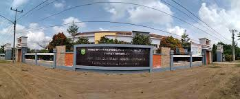

Sekolahku
Jejak Jejak Rekam Pendidikan
SD Negeri Kauman 1 Bojonegoro
SD Negeri Kauman 1 adalah sekolah dasar yang berada di kabupaten bojonegoro tepatnya di kecamatan Kauman.

SMP Sriwijaya Palembang
SMP Sriwijaya adalah sekolah menengah pertama yang berada di daerah plaju kota palembang
SMK Muhammadiyah 2 Palembang
Sekolah Menengah Kejurusan atau SMK Muhammadiyah 2 Palembang terletak di jalan silaberanti yg berada di daerah seberang ulu I. Di bangku persekolahan ini saya mengambil jurusan Akuntansi Keuangan dan Lembaga.

Politeknik Negeri Sriwijaya
Politeknik Negeri Sriwijaya atau disingkat Polsri adalah suatu perguruan tinggi ternama di Indonesia. Sebuah Kehormatan bagi saya bisa melanjutkan pendidikan di Polsri.